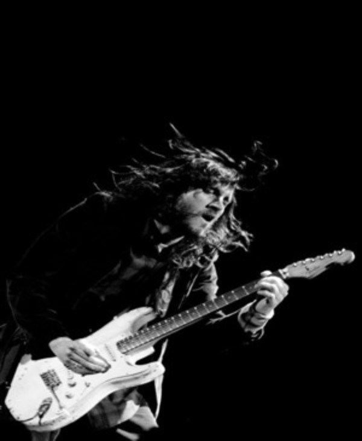

John Frusciante
Guitarrista da bandaJohn Frusciante é um guitarrista, cantor, compositor e produtor musical americano. Ele é conhecido por seu trabalho com a banda Red Hot Chili Peppers, com quem gravou sete álbuns. Frusciante é considerado um dos guitarristas mais influentes do rock, e seu estilo é caracterizado por sua técnica, criatividade e versatilidade.
Frusciante começou a tocar guitarra aos oito anos de idade, e rapidamente se tornou um músico talentoso. Aos 18 anos, ele foi convidado a se juntar ao Red Hot Chili Peppers, que havia acabado de perder seu guitarrista original, Hillel Slovak.
O guitarrista rapidamente se tornou um membro essencial da banda. Ele ajudou a moldar o som dos Chili Peppers, adicionando elementos de rock alternativo, funk e música eletrônica. Responsável por alguns dos riffs de guitarra mais memoráveis da banda, incluindo "Under the Bridge", "Scar Tissue", "Californication" e "Otherside".
"As vezes quando estou tocando e olho para John eu simplesmente sinto vontade de chorar porque tem muito amor pela música vindo de seu coração."
- Nascimento: 05/13/1970
- Idade: 53 anos
- Altura: 1.73m
- Nacionalidade: Estados Unidos
- Cidade: Queens, Nova Iorque
- Discos com a banda: 7 albúns
Frusciante também é mercado por suas idas e vindas com a banda. Após se juntar a banda em 1989 Frusciante deixou o RHCP em 1992, voltando apenas em 1998. Ele gravou mais quatro álbuns com a banda, incluindo "Californication", "By the Way" e "Stadium Arcadium", álbuns que ajudaram a levar o Red Hot Chili Peppers ao estrelato global. No entanto, em 2009 o músico anunciou, mais uma vez, a sua saída do grupo. Em 15 de dezembro de 2019 a banda anunciou a volta do guitarrista para a banda, pela segunda vez, gravando "Unlimited Love" e "Return of the Dream Canteen".
Além de seu trabalho com o Red Hot Chili Peppers, Frusciante também lançou uma série de álbuns solo. Esses álbuns são frequentemente experimentais e exploram diferentes estilos musicais. Frusciante também é um artista visual talentoso, e suas pinturas e desenhos foram exibidos em galerias de arte em todo o mundo.